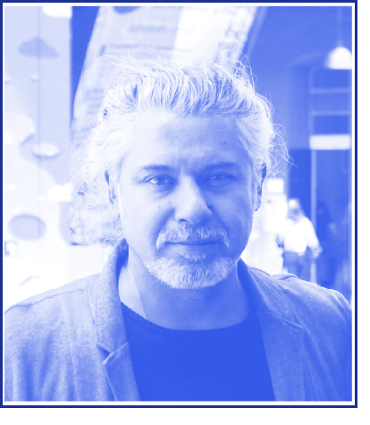
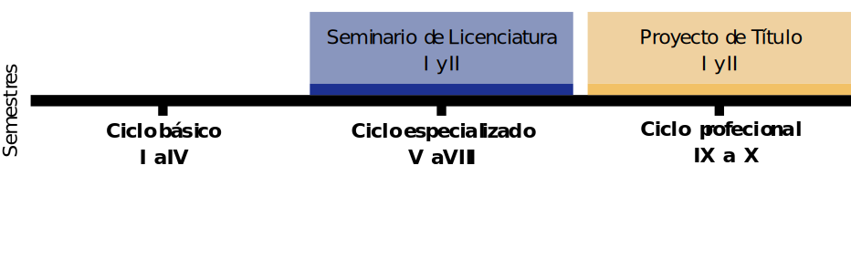
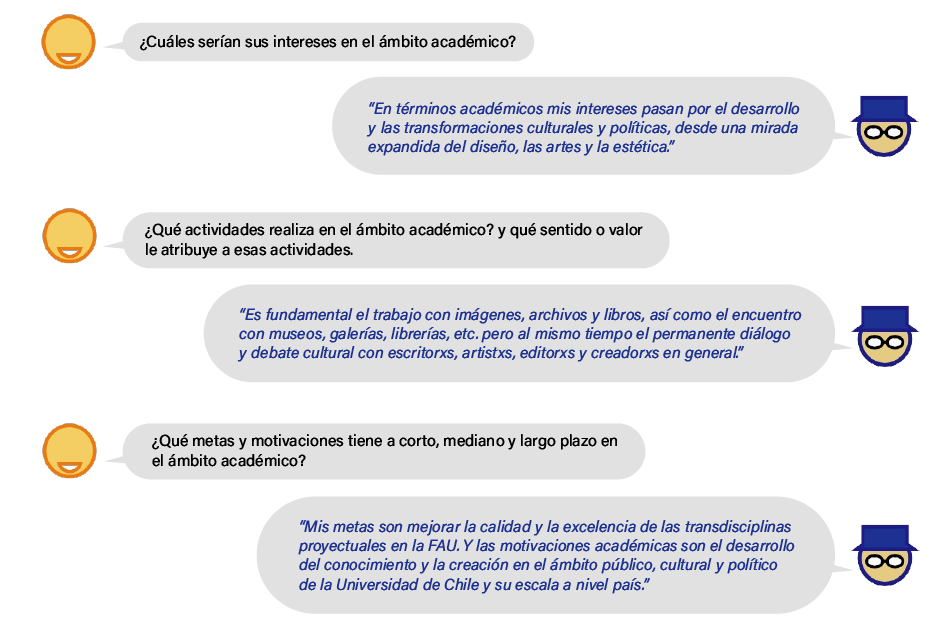
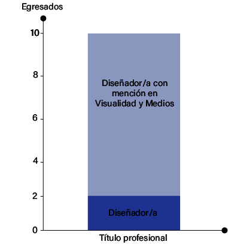
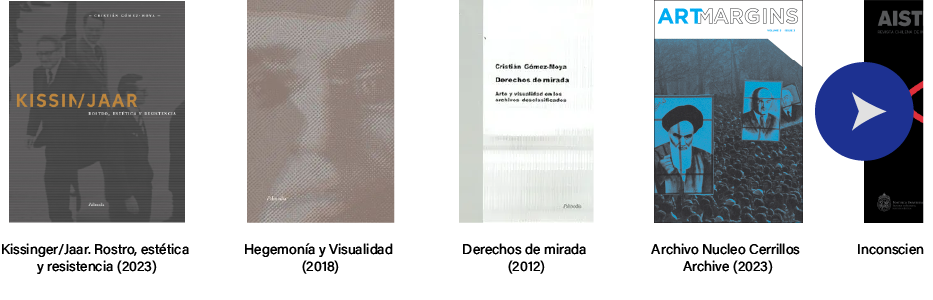
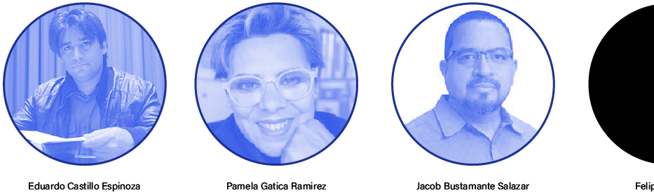
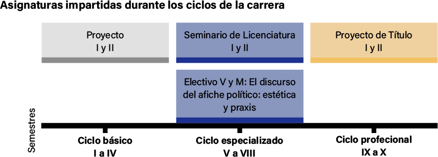
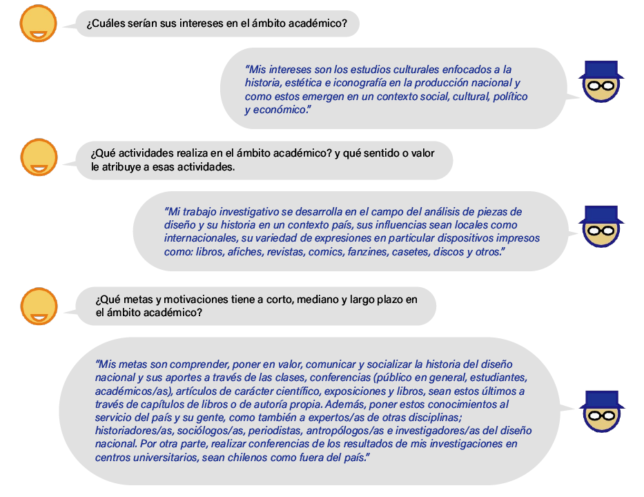
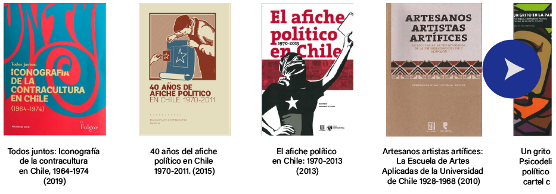
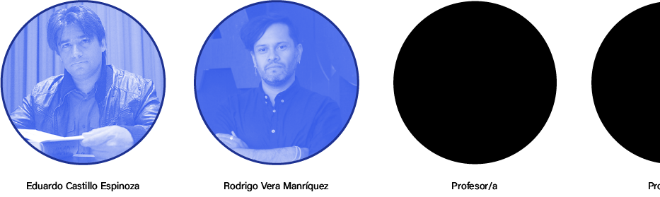

Cristián Manuel Gómez Moya
correo@correo.com
Profesor Asociado en Categoría Academica Ordinaria
Adscrito al Departamento de diseño
- Estudios
- Doctor en Hictoria y Teoría del Arte, Universitat de Barcelona (2016)
- Licenciado en Educación, Universidad de Playa Ancha (2015)
Su enfoque se centra en la relación entre diseño, arte y cultura, destacandose por la creación de proyetos editoriales, curatoriales y mediales que exploran la cultura visual, la estética y la micropolitica.


Áreas prioritarias en investigación y creación en la Facultad de Arquitectura y Urbanismo:
- Área Prioritaria 7: Culturas visuales, materiales-inmateriales y mediales
- Área Prioritaria 8: Fenómenos sensibles, perceptuales y corporales en el entorno
Lineas de Investigación del Departamento de Diseño
- Estudios Visuales y Mediales
Enfasis del Ciclo 3 del Plan de Estudios del Programa Académico:
- Investigación
- Creación










¿Cómo se relaciona su nota aprobatoria previa, de Proyecto de Título I, con la nota definida por la comisión examinadora de Proyecto de Título II?
¿Qué parte de las inscripciones en la asignatura de Proyecto de Título II con se han convertido en Exámenes de Título aprobados?
| Egresado/a | Título | Semestre | Proyecto | Nota |
|---|